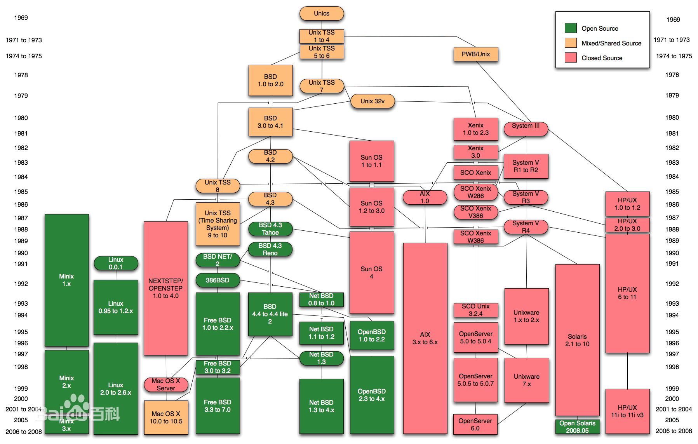

02-Linux系统发展史¶
Linux 操作系统的发展历史¶
Unix¶
1965 年之前的时候，电脑并不像现在一样普遍，它可不是一般人能碰的起的，除非是军事或者学院的研究机构，而且当时大型主机至多能提供30台终端（30个键盘、显示器)，连接一台电脑
为了解决数量不够用的问题
- 1965 年左右由 贝尔实验室 加入了 麻省理工学院 以及 通用电气 合作的计划 —— 该计划要建立一套 多使用者(multi－user)、多任务(multi－processor)、多层次(multi－level) 的 MULTICS 操作系统，想让大型主机支持 300 台终端
- 1969 年前后这个项目进度缓慢，资金短缺，贝尔实验室退出了研究
- 1969 年从这个项目中退出的 Ken Thompson 当时在实验室无聊时，为了让一台空闲的电脑上能够运行 "星际旅行（Space Travel）" 游戏，在 8 月份左右趁着其妻子探亲的时间，用了 1 个月的时间，使用汇编写出了 Unix 操作系统的原型
- 1970 年，美国贝尔实验室的 Ken Thompson，以 BCPL 语言为基础，设计出很简单且很接近硬件的 B 语言（取BCPL的首字母），并且他用 B 语言 写了第一个 UNIX 操作系统
- 1971 年，同样酷爱 "星际旅行（Space Travel）" 的 Dennis M.Ritchie 为了能早点儿玩上游戏，加入了 Thompson 的开发项目，合作开发 UNIX，他的主要工作是改造 B 语言，因为B 语言 的跨平台性较差
- 1972 年，Dennis M.Ritchie 在 B 语言 的基础上最终设计出了一种新的语言，他取了 BCPL 的第二个字母作为这种语言的名字，这就是 C 语言
- 1973 年初，C 语言的主体完成，Thompson 和 Ritchie 迫不及待地开始用它完全重写了现在大名鼎鼎的 Unix 操作系统

肯·汤普逊（左）和丹尼斯·里奇（右）
Minix¶
-
因为 AT&T（通用电气） 的政策改变，在 Version 7 Unix 推出之后，在1979年时，发布新的使用条款，将 UNIX 源代码私有化，源代码被当作商业机密，成为专利产品，在大学中不能再使用 UNIX 源代码，人们再也不能自由地享受科技成果。
-
于是在1984年，Richard Stallman面对于如此封闭的软件创作环境，发起了GNU源代码开放计划并制定了著名的GPL许可协议。1987年时，GNU计划获得了一项重大突破—gcc编译器发布，这使得程序员可以基于该编译器编写出属于自己的开源软件。

-
Andrew S. Tanenbaum（塔能鲍姆） 教授为了能 在课堂上教授学生操作系统运作的细节，决定在不使用任何 AT&T 的源代码前提下，自行开发与 UNIX 兼容的操作系统，以避免版权上的争议。
-
以 小型 UNIX（mini-UNIX）之意，将它称为 MINIX。MINIX最初发布于1987年，开放全部源代码给大学教学和研究工作。2000年重新改为BSD授权，成为自由和开放源码软件。
Linux¶
-
1991 年 林纳斯（Linus） 就读于赫尔辛基大学期间，对 Unix 产生浓厚兴趣，尝试着在Minix 上做一些开发工作
-
因为 Minix 只是教学使用，因此功能并不强，林纳斯 经常要用他的终端 仿真器（Terminal Emulator）去访问大学主机上的新闻组和邮件，为了方便读写和下载文件，他自己编写了磁盘驱动程序和文件系统，这些在后来成为了 Linux 第一个内核的雏形，当时，他年仅 21 岁！
-
林纳斯利用 GNU 的 bash 当做开发环境，gcc 当做编译工具，编写了 Linux 内核，一开始 Linux 并不能兼容 Unix
-
即 Unix 上跑的应用程序不能在 Linux 上跑，即应用程序与内核之间的接口不一致
- 一开始 Linux 只适用于 386，后来经过全世界的网友的帮助，最终能够兼容多种硬件


C 语言¶
-
在把UNIX移植到其他类型的计算机上使用时，C 语言强大的移植性（Portability）在此显现
-
机器语言和汇编语言都不具有移植性，为 x86 开发的程序，不可能在 Alpha，SPARC 和 ARM 等架构处理器的机器上运行
- 而 C 语言程序则可以使用在任意架构的处理器上，只要那种架构的处理器具有对应的 C 语言编译器和库，然后将 C 源代码编译、连接成目标二进制文件之后即可运行
Unix 家谱¶

Linux 内核及发行版¶
Linux 内核版本¶
-
内核（kernel）是系统的心脏，是运行程序和管理像磁盘和打印机等硬件设备的核心程序，它提供了一个在裸设备与应用程序间的抽象层
-
Linux 内核版本又分为稳定版 和开发版，两种版本是相互关联，相互循环
-
稳定版：具有工业级强度，可以广泛地应用和部署。新的稳定版相对于较旧的只是修正一些 bug 或加入一些新的驱动程序
-
开发版：由于要试验各种解决方案，所以变化很快
-
内核源码网址：http://www.kernel.org
所有来自全世界的对 Linux 源码的修改最终都会汇总到这个网站，由 Linus 领导的开源社区对其进行甄别和修改最终决定是否进入到 Linux 主线内核源码中
Linux 发行版本¶
- Linux 发行版（也被叫做 GNU/Linux 发行版）通常包含了包括桌面环境、办公套件、媒体播放器、数据库等应用软件
- 常见的发行版本如下：
- Ubuntu
- Redhat
- Fedora
- OpenSUSE
- Linux Mint
- CentOS
- Debian
- Manjaro
- Mageia
- Arch
- Kali
- 2018值得选用的五个Linux服务器发行版
在几乎每一份与 Linux 有关的榜单上，基于 Debian 的 Ubuntu 都占有一席之位。Canonical 的Ubuntu 胜过其他所有的 Linux 服务器发行版 ―― 从简单安装、出色的硬件发现，到世界级的商业支持，Ubuntu确立了难以企及的严格标准
Linux 的应用领域¶
服务器领域¶
- Linux 在服务器领域的应用是其重要分支
- Linux 免费、稳定、高效等特点在这里得到了很好的体现
- 早期因为维护、运行等原因同样受到了很大的限制
- 近些年来 Linux 服务器市场得到了飞速的提升，尤其在一些高端领域尤为广泛
嵌入式领域¶
- 近些年来 Linux 在嵌入式领域的应用得到了飞速的提高
- Linux 运行稳定、对网络的良好支持性、低成本，且可以根据需要进行软件裁剪，内核最小可以达到几百 KB 等特点，使其近些年来在嵌入式领域的应用得到非常大的提高
主要应用：机顶盒、数字电视、网络电话、程控交换机、手机、PDA、等都是其应用领域，得到了 Google、三星、摩托罗拉、NEC 等公司的大力推广

个人桌面领域¶
- 此领域是传统 Linux 应用最薄弱的环节
- 传统 Linux 由于界面简单、操作复杂、应用软件少的缺点，一直被 Windows 所压制
- 近些年来随着 Ubuntu、Fedora 等优秀桌面环境的兴起，同时各大硬件厂商对其支持的加大，Linux 在个人桌面领域的占有率在逐渐的提高
在 Ubuntu 中玩 QQ

移动设备操作系统¶
- 各种品牌的Android手机